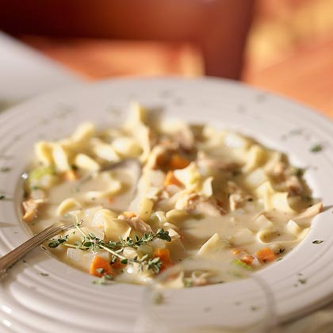

Roasted Chicken Noodle Soup

Ingredients
- 2 teaspoons olive oil
- 1 cup chopped onion
- 1 cup diced carrots
- 1 cup sliced celery
- 1 garlic clove, minced
- ¼ cup all-purpose flour
- ½ teaspoon dried oregano
- ¼ teaspoon dried thyme
- ¼ teaspoon poultry seasoning
- 6 cups low-salt chicken broth
- 4 cups diced peeled baking potato
- 1 teaspoon salt
- 2 cups diced leftover roasted chicken
- 1 cup evaporated skim milk
- 4 ounces (2 cups) uncooked wide egg noodles
- Fresh thyme (optional)
Instructions
- Heat olive oil in a Dutch oven over medium heat.
-
Add chopped onion, carrots, celery, and garlic clove; sauté 5 minutes.
-
Sprinkle flour, oregano, thyme, and poultry seasoning over vegetables,
and cook 1 minute.
- Stir in broth, potato, and salt.
-
Bring to a boil; reduce heat, and simmer, partially covered, 25 minutes
or until potato is tender.
-
Add roasted chicken, milk, and noodles, and cook 10 minutes or until
noodles are tender.
- Garnish with fresh thyme, if desired.